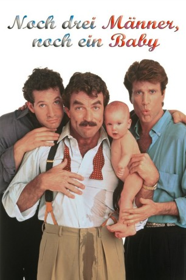

#5034 Noch drei Männer, noch ein Baby
Alternativ: 3 Men and a Baby
 
 IMDB-Wertung: 5.9 / 10
IMDB-Wertung: 5.9 / 10  Metascore: 0
Metascore: 0 
Drei fidele Junggesellen finden vor der Tür ihres Luxusappartments ein ausgesetztes Baby. Der kleine Gast hält die drei in Babypflege unerfahrenen Väter wider Willen fortan auf Trab und verwandelt ihr Leben in ein schlafloses Chaos. Anfänglicher Unmut weicht tiefer Zuneigung für den Wonnekloß. Für zusätzliche Verwirrung sorgt ein Päckchen Heroin, das ihnen untergeschoben wird. Am Ende überzeugen sie die "Rabenmutter", daß das Kind bei ihnen am besten aufgehoben ist und machen die lästigen Dealer allein dingfest.
Jahr: 1987
Dauer: 102 Minuten
FSK: 6
Land: USA Studio: NBCTonspuren: DD5.1 - ,
Untertitel:
Auflösung: 720p (1280x688) Größe: 5304 MB
Genre: Drama, Komödie, Familie
Regisseur:  Leonard Nimoy
Leonard Nimoy
Drehbuch: Alphaville Films
Soundtrack:
Darsteller:
 Tom Selleck als Peter Mitchell
Tom Selleck als Peter Mitchell Steve Guttenberg als Michael Kellam
Steve Guttenberg als Michael Kellam Ted Danson als Jack Holden
Ted Danson als Jack Holden Nancy Travis als Sylvia Bennington
Nancy Travis als Sylvia Bennington Margaret Colin als Rebecca
Margaret Colin als Rebecca- Alexandra Amini als Patty
 Philip Bosco als Det. Sgt. Melkowitz
Philip Bosco als Det. Sgt. Melkowitz Eugene Clark als Man #1 at Party
Eugene Clark als Man #1 at Party Derek de Lint als Jan Clopatz
Derek de Lint als Jan Clopatz- Michèle Duquet als Tawnya
 Dave Foley als Grocery Store Clerk
Dave Foley als Grocery Store Clerk Paul Guilfoyle als Vince
Paul Guilfoyle als Vince Earl Hindman als Satch
Earl Hindman als Satch- Celeste Holm als Jack's Mother
- Jacqueline Murphy als Gate Attendant
 Colin Quinn als Gift Shop Clerk
Colin Quinn als Gift Shop Clerk- John Gould Rubin als Paul Milner
 Jonathan Whittaker als Adam
Jonathan Whittaker als Adam- Francine Beers als Woman at Gift Shop
- Lisa Blair als Mary Bennington
- Michelle Blair als Mary Bennington
- Barbara Budd als Dramatic Actress
- Michael Burgess als Handsome Man at Party
- Claire Cellucci als Angelyne
 David Ferry als Telephone Installer
David Ferry als Telephone Installer- Cynthia Harris als Mrs. Hathaway
- Mario Joyner als Cab Driver
- Gary Howard Klar als Detective #1
- Joe Lynn als Detective #2
- Christine Kossak als One of Jack's Girls
- Edward D. Murphy als Security Guard
- Thomas Quinn als Mounted Policeman
- Jackie Richardson als Edna
- Camilla Scott als Cherise
- Daniele Scott als Swimming Instructor
- Sharolyn Sparrow als Vanessa
- Stevie Vallance als Sally
- Peter Bontje als Party guest , uncredited
- Christine Cossack als (uncredited
Datei: X:\2-Dilogie(A-F)\Drei Männer und\Noch drei Männer, noch ein Baby (1987, FSK6, 1280x688).mkv seit 21.12.2016
Festplatte: HD Collection-2(A-Z)-3(A-M)
 Alle Filme aus Gruppe '2-Dilogie(A-F)\Drei Männer und'
Alle Filme aus Gruppe '2-Dilogie(A-F)\Drei Männer und'